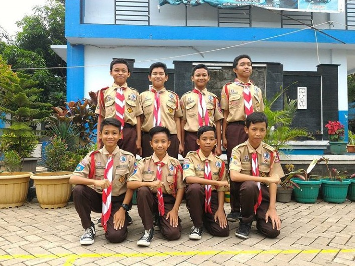
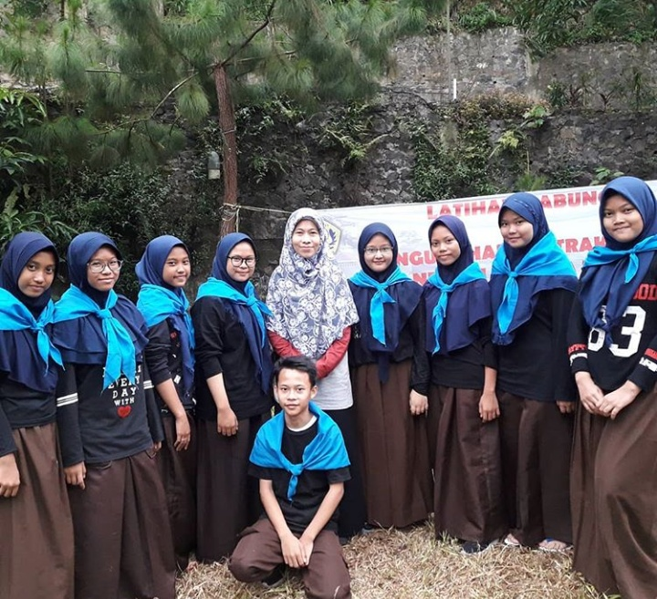
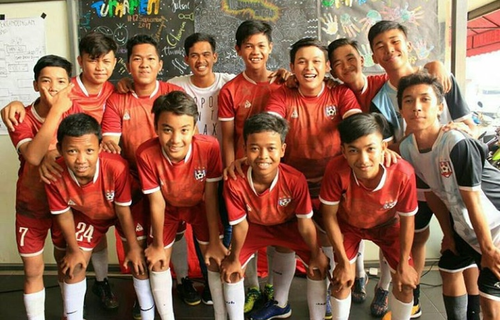

SMPN 24 TANGERANG berdiri pada tahun 2007, SMPN 24 TANGERANG mempunyai 30 ruang kelas, 1 perpustakan, 1 ruang bimbingan konseling dan 1 ruang laboratrium
ACTIVITIES

Pramuka
Pramuka SMPN 24 TANGERANG sudah memiliki beberapa Prestasi perlombaan dari bidang Pramuka dan Prestasi Pramuka yang dimiliki sudah tingkat Provinsi Banten.

PMR
PMR SMPN 24 TANGERANG sudah memiliki Prestasi Perlombaan serta Prestasi terfavorit dari bidang PMR dan Prestasi PMR yang dimiliki sudah tingkat Kota Tangerang.

Futsal
Futsal SMPN 24 TANGERANG sudah memiliki beberapa Prestasi perlombaan dari bidang Futsal dan Prestasi Futsal yang dimiliki sudah tingkat Provinsi Banten.